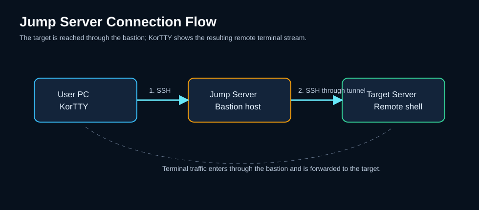

Verbindungen¶
korTTY verwaltet SSH-, Mosh- und Local-Shell-Verbindungen über drei Einstiegspunkte: die Schnellverbindung, den Connection-Manager und gespeicherte Projekte.

Schnellverbindung¶
Öffnen mit Ctrl+K (oder Verbindungen → Schnellverbindung…). Geben Sie Host, Port, Benutzernamen und Authentifizierung ein und stellen Sie eine Verbindung her, ohne zu speichern. Häufig verwendete Verbindungen werden als Schnellschaltflächen angezeigt. Eine Live-Suche filtert sie. Gespeicherte Verbindungen können aus einem Dropdown-Menü mit einem eigenen Suchfeld ausgewählt werden, das nach Name, Host oder Tag filtert (* funktioniert als Platzhalter); Das Tag einer gespeicherten Verbindung wird neben ihrem Namen (🏷) im Dropdown-Menü und in den QuickInfos der Schnellschaltflächen angezeigt.
Connection-Manager¶
Verbindungen → Verbindungen verwalten… öffnet einen durchsuchbaren Baum gespeicherter Verbindungen (optional gruppiert); Das Suchfeld durchsucht Name, Host, IP-Adresse oder Tag, mit * als Platzhalter. Von hier aus können Sie Verbindungen erstellen, bearbeiten, duplizieren, löschen, markieren, importieren und exportieren.
Anmelden¶
Verbinden im Connection-Manager meldet sich bei der ausgewählten Verbindung in dieser Reihenfolge an:
- korTTY prüft zuerst die Serverzugriffsrichtlinie Ihrer Organisation. Bei einem gesperrten Server oder Jump-Server erscheint die Richtlinienmeldung, bevor korTTY Sie nach irgendetwas fragt.
- Eine gemeinsam genutzte Teamarbeit-Verbindung, die weder Anmeldeinformationen noch einen SSH-Schlüssel angibt, verwendet die Standardauthentifizierung des Teams.
- Eine Verbindung mit einem temporären SSH-Schlüssel verwendet diesen Schlüssel wieder, solange er noch gültig ist, und fragt nach einem neuen, sobald er abgelaufen ist. Sie fragt auch dann nach einem neuen, wenn der Tresor gesperrt ist und korTTY den gespeicherten Schlüssel nicht entschlüsseln konnte, statt eine SSH-Schlüssel-Authentifizierung ohne Schlüssel zu versuchen.
- Lokale Shells und Verbindungen mit SSH-Schlüssel-Authentifizierung verbinden sich ohne Passwort.
- Andernfalls verwendet korTTY das gespeicherte Passwort, zuerst aus den hinterlegten Anmeldeinformationen der Verbindung und dann aus der Verbindung selbst, und fragt nach dem Passwort, wenn keines gespeichert ist; OK bleibt ausgegraut, bis Sie eines eingeben. Liegt das gespeicherte Passwort im gesperrten Tresor, bietet korTTY zuerst Tresor entsperren… an (siehe Später den Tresor entsperren); wenn Sie ihn nicht entsperren, bittet korTTY Sie stattdessen, das Passwort einzugeben.
Wenn Sie eine dieser Fragen abbrechen, wird kein Tab geöffnet. Duplizieren im Kontextmenü eines Terminal-Tabs meldet sich auf dieselbe Weise an und fragt daher ebenfalls nach einem neuen temporären SSH-Schlüssel, wenn der Schlüssel des Tabs abgelaufen ist. Eine gespeicherte oder Teamwork-Verbindung, die Sie in der Befehlspalette auswählen (Ctrl+Shift+P, Cmd+Shift+P unter macOS, dann @ und ein Teil ihres Namens), meldet sich auf dieselbe Weise an, ebenso eine Verbindung, die Sie unter Datei → Zuletzt verwendet auswählen. Geschlossenen Tab wieder öffnen und Datei → Zuletzt geschlossen melden sich ebenfalls so an, mit der gespeicherten Verbindung in ihrem aktuellen Stand (siehe Arbeiten mit Tabs). Das Öffnen eines Projekts meldet jeden Tab in derselben Reihenfolge an, fragt aber von sich aus nichts: Ein Tab, der ein Passwort, einen neuen temporären SSH-Schlüssel oder den gesperrten Tresor braucht, wartet in einer Leiste mit Verbinden… und Tresor entsperren…, und ein blockierter Server oder eine gelöschte Verbindung wird dort aufgeführt, statt einen Dialog anzuzeigen.
Verbindung erstellen/bearbeiten¶
Der Verbindungseditor verfügt über folgende Registerkarten:
| Registerkarte | Inhalt |
|---|---|
| Verbindung | Host, Port, Benutzername, Protokoll (SSH / Mosh / Lokale Shell), Terminalemulation, Zeichenkodierung (Standard verwenden / UTF-8 / ISO-8859-1 / ISO-8859-15 / Windows-1252), Authentifizierung (Passwort / Schlüssel / keyboard-interactive), Host-Key-Prüfung (Standard verwenden / prüfen / nicht prüfen), Gruppen-/Ordnerzuweisung und ein optionaler Freitext Tag. Für Lokale Shell Verbindungen sind Host, Port, Benutzername und Authentifizierung nicht erforderlich und deaktiviert. Siehe Zeichenkodierung. |
| Terminal-Einstellungen | Globale Terminal-Einstellungen verwenden oder Eigene Einstellungen für diese Verbindung mit Farben, Schriftart und ANSI/TrueColor-Behandlung pro Verbindung (siehe Eigene Terminaleinstellungen), der Abschnitt Terminal-Verhalten mit der Tab-Farbe, dem Regelsatz für die Hervorhebung von Schlüsselwörtern und dem Einfügeschutz, der Abschnitt Sitzungs-Isolation mit Isolationsstufe, strengem Terminal-Modus und Inkognito-Schalter, Terminal-Effekt |
| SSH-Tunnel | Lokale / Remote- / dynamische Portweiterleitung |
| Jump Server | Bastion-Host-Verkettung |
| Terminal-Logging | Schreibt den Terminal-Ausgang dieser Verbindung in eine Datei – Ordner, Format, tägige Rotation, Kompression und Aufbewahrung. Siehe Terminal-Logging. |
| Journal | Pro Verbindung Sitzungsjournal: Aktivieren Sie das Journaling für diese Verbindung und konfigurieren Sie das Capture-Log und die KI-Zusammenfassung |
| Fenstergeometrie | Gespeicherte Größe/Position für diese Verbindung |
| KI | KI-Standardeinstellungen pro Verbindung: die KI-Profil und KI-Skills, die von Terminal-KI-Funktionen auf dieser Verbindung verwendet werden |
Acht Registerkarten passen in einem schmalen Fenster nicht mehr in eine Zeile. Neben dem Menü am rechten Ende der Registerkartenleiste, das per Name zu einer Registerkarte springt, hat die Zeile über den Registerkarten zwei Pfeil-Buttons, die zur vorherigen und zur nächsten Registerkarte wechseln, und ein Zähler wie 3 / 8 zeigt, wo Sie sind; auf der ersten und der letzten Registerkarte ist ein Pfeil ausgegraut. Mit Ctrl+Tab und Ctrl+Shift+Tab (oder Ctrl+Page Down und Ctrl+Page Up) wechseln Sie per Tastatur ebenso, auch wenn der Cursor in einem Feld steht.
Eigene Terminaleinstellungen¶
Der obere Teil der Registerkarte Terminal-Einstellungen legt fest, woher das Terminal-Aussehen der Verbindung stammt. Globale Terminal-Einstellungen verwenden, die Vorgabe für jede neue Verbindung, folgt Einstellungen → Terminal und den dortigen Farben, sodass eine spätere Änderung dort auch diese Verbindung ändert; die Felder darunter zeigen dann die globalen Werte und lassen sich nicht bearbeiten. Eigene Einstellungen für diese Verbindung gibt Thema, Schriftart, Größe, Text- und Hintergrundfarbe, den Schalter für die Terminal-Farben, Tab ohne Nachfrage schließen und Befehls-Zeitstempel anzeigen zur Bearbeitung frei, ausgehend von den Werten, die in diesem Moment gelten. Das Speichern im Connection-Manager wendet die Auswahl auf die offenen Tabs der Verbindung in jedem Fenster an, und auch neue und wiederverbundene Tabs verwenden sie. Wechseln Sie zurück zu den globalen Einstellungen, werden wieder die globalen Werte angezeigt, und die Verbindung folgt nach dem Speichern Einstellungen → Terminal; wechseln Sie vor dem Speichern erneut zu eigenen Einstellungen, kehren die zuvor eingegebenen Werte zurück, während nach dem Speichern mit den globalen Einstellungen eine spätere Auswahl von Eigene Einstellungen für diese Verbindung wieder von den globalen Werten dieses Moments ausgeht. Der Abschnitt Terminal-Verhalten und der Terminal-Effekt gelten in beiden Fällen.
Verbindungen, die von früheren Versionen gespeichert wurden, verwenden nach dem Update weiterhin die globalen Einstellungen, auch wenn ihre Registerkarte Terminal-Einstellungen noch Werte von damals enthält: Diese Werte wurden nie angewendet, daher schaltet korTTY sie nicht von selbst ein. Wählen Sie Eigene Einstellungen für diese Verbindung und speichern Sie, um einer solchen Verbindung ihr eigenes Aussehen zu geben. Dasselbe gilt für Exporte und Teamwork-Dateien, die von früheren Versionen geschrieben wurden; jetzt geschriebene Exporte und Teamwork-Dateien enthalten die Auswahl jeder Verbindung.
In der Schnellverbindung zeigt der Abschnitt Terminal-Darstellung die Werte, die die Verbindung verwenden würde; ändern Sie sie dort, wird diese Sitzung damit dargestellt, und eine neue Verbindung, die mit Verbindung speichern gespeichert wird, behält sie als eigene Einstellungen. Bei einer gespeicherten Verbindung, die aus der Liste ausgewählt wurde, gilt eine geänderte Darstellung nur für diese Sitzung, und die gespeicherte Verbindung bleibt unverändert.
Zeichenkodierung¶
Zeichenkodierung legt fest, wie korTTY dekodiert, was die Sitzung dieser Verbindung ausgibt und wie Sie eingeben und einfügen, für Server deren Programme noch ISO-8859-1, ISO-8859-15 oder Windows-1252 statt UTF-8 schreiben. Standard verwenden folgt Einstellungen → Terminal → Kodierung für SSH-Verbindungen und bedeutet UTF-8 für lokale Shells. Mosh funktioniert nur mit UTF-8, daher ist das Dropdown bei Mosh-Verbindungen gesperrt und daneben steht eine entsprechende Notiz. Die Auswahl wird mit der Verbindung gespeichert, bleibt bei Duplizieren, Exportieren und Importieren erhalten und gilt beim nächsten Verbinden oder Wiederverbinden des Tabs.
Hervorhebung von Schlüsselwörtern¶
Der Abschnitt Terminal-Verhalten der Registerkarte Terminal-Einstellungen wählt den Regelsatz für die Hervorhebung von Schlüsselwörtern, den die Terminals dieser Verbindung zeigen: Standard verwenden folgt dem Standard-Regelsatz unter Einstellungen → Terminal, Keiner lässt sie ohne Hervorhebung, oder Sie wählen einen mitgelieferten oder einen eigenen Regelsatz, zum Beispiel Netzwerkgeräte für Switches. Der Abschnitt gilt unabhängig davon, ob die Verbindung eigene Terminal-Einstellungen verwendet, und auch, wenn Terminal-Effekte ausgeschaltet sind. Die Wahl wird mit der Verbindung gespeichert und bleibt beim Duplizieren, Exportieren und Importieren erhalten, und beim Speichern im Connection-Manager gilt sie sofort für die geöffneten Terminals der Verbindung. Ein Regelsatz, der für einen einzelnen Bereich in einem Menü oder mit Ctrl+Shift+H (Cmd+Shift+H auf macOS) gewählt wurde, hat für diesen Bereich weiterhin Vorrang.
Einfügeschutz¶
Der Abschnitt Terminal-Verhalten der Registerkarte Terminal-Einstellungen kann einer Verbindung einen eigenen Einfügeschutz geben, zum Beispiel damit ein Produktionsserver vor jedem Einfügen mit Zeilenumbruch nachfragt, während Ihre anderen Verbindungen den Standard behalten:
- Bei mehrzeiligem Einfügen warnen — Standard verwenden folgt Einstellungen → Terminal → Einfügeschutz und nennt dessen aktuelle Wahl; oder wählen Sie Aus, Außer das Programm verwendet Bracketed Paste oder Immer. Immer ist die richtige Wahl für Produktionsserver: Ob ein Programm Bracketed Paste verwendet, teilt der Server mit, und jede Ausgabe kann das behaupten. Aus schaltet für diese Verbindung auch die Warnung vor Steuerzeichen ab.
- Pause nach jeder eingefügten Zeile — setzen Sie den Haken bei Eigene Pause statt des Standards und stellen Sie 0 bis 1.000 ms ein, damit eingefügter Text in diese Verbindung Zeile für Zeile gesendet wird, etwa für einen Switch oder Konsolenserver, der zu schnell eintreffende Eingaben verliert (siehe Einfügen in langsame Geräte). Mit Haken fügt 0 in diese Verbindung sofort ein, selbst wenn Einstellungen → Terminal eine Pause festlegt; ohne Haken gilt die Pause aus Einstellungen → Terminal, und das Feld nennt sie.
Wenn die Unternehmensrichtlinie Ihrer Organisation mit paste-warning eine Mindestwarnung festlegt, wird die eigene Warnung einer Verbindung, die seltener nachfragt, auf diese angehoben. Die Größenprüfung, Warnen, wenn eingefügter Text größer ist als, stammt immer aus Einstellungen → Terminal. Jeder Bereich folgt seiner eigenen Verbindung, sodass ein Bereich, den Rechts teilen (neue Verbindung) oder Unten teilen (neue Verbindung) zu einem anderen Server geöffnet hat, den Einfügeschutz dieses Servers verwendet. Das Speichern im Connection-Manager gilt für das nächste Einfügen in die offenen Terminals der Verbindung in jedem Fenster. Wenn die eigene Warnung einer Verbindung nachfragt, sagt die Einfügebestätigung, dass die Verbindung sie festlegt, statt auf Einstellungen → Terminal zu verweisen; ein Einfügen, das nur wegen seiner Größe nachfragt, verweist weiterhin auf Einstellungen → Terminal. Die Auswahl wird mit der Verbindung gespeichert und bleibt beim Duplizieren, Exportieren und Importieren erhalten; eine importierte Verbindung bringt die Werte der Datei mit, aus der sie stammt, prüfen Sie sie also im Editor.
Gemeinsame Verbindungen können die Warnung nur verschärfen
Eine Teamarbeit-Verbindung kann in der gemeinsamen Datei einen eigenen Einfügeschutz mitbringen. Ihre Warnung gilt nur, wenn sie häufiger nachfragt als Ihre eigene Einstellung; wer die Datei pflegt, kann also einen Produktionsserver vor jedem mehrzeiligen Einfügen nachfragen lassen, aber nie eine Warnung ausschalten, die Sie gewählt haben; der Verbindungseditor weist bei einer solchen Verbindung darauf hin. Ihre Pause nach jeder eingefügten Zeile gilt wie angegeben, weil eine Pause das Einfügen nur verlangsamt und Esc es abbricht. Eine Teamwork-Verbindung behält die Werte, die sie beim Öffnen ihres Terminals hatte.
Tags¶
Jede gespeicherte Verbindung kann ein optionales Freitext-Tag tragen – eine Bezeichnung wie prod, staging oder einen Kundennamen – unabhängig von der Gruppen-/Ordnerhierarchie. Legen Sie es auf der Registerkarte Verbindung des Verbindungseditors (neben der Gruppe) oder gesammelt im Connection-Manager fest. Tags werden mit der Verbindung in connections.xml gespeichert und überstehen das Duplizieren, Exportieren und Importieren.
- Sichtbar – markierte Verbindungen zeigen ein 🏷-Symbol nach ihrem Namen im Connection-Manager-Baum und im Dropdown-Menü „Gespeicherte Verbindungen“ der Schnellverbindung; Das Tag erscheint auch im Tooltip der häufig verwendeten Schnellschaltflächen.
- Durchsuchbar – Die Connection-Manager-Suche (Registerkarten „Lokal“ und „Teamwork“) und die Suche nach gespeicherten Verbindungen der Schnellverbindung berücksichtigen Tags ebenso wie Namen und Hosts.
- Massenzuweisung/-entfernung – Wählen Sie einen oder mehrere Server aus und wählen Sie Tag zuordnen aus dem Kontextmenü, um sie in einem Schritt zu taggen. Die Eingabeaufforderung ist vorab ausgefüllt, wenn alle ausgewählten Verbindungen bereits dasselbe Tag haben. Durch das Löschen dieses vorab ausgefüllten Werts wird das Tag entfernt. Tag entfernen löscht das Tag und ist nur aktiviert, solange die Auswahl mindestens eine markierte Verbindung enthält. Die gleichen zwei Einträge im Kontextmenü eines Ordners gelten für jede Verbindung in diesem Ordner, einschließlich Unterordnern.
- Nach Tag exportieren – Sobald mindestens ein Tag vorhanden ist, bietet das Exportdialogfeld des Connection-Managers die Option Zu exportierende Verbindungen: Behalten Sie die vorab ausgewählten Verbindungen bei oder exportieren Sie alle Verbindungen mit diesen Tags – wählen Sie ein oder mehrere Tags aus der Liste aus, die Verbindungsanzahl des Headers folgt der Auswahl live und die Schaltfläche „Exportieren“ bleibt deaktiviert, solange nichts übereinstimmt.
Tab-Farbe¶
Eine Tab-Farbe markiert jeden Terminal-Tab einer Verbindung mit einem kleinen farbigen Punkt vor seinem Titel und einem 3 Pixel breiten Rahmen derselben Farbe um sein Terminal, sodass sich ein Produktionsserver auf einen Blick von Testrechnern abhebt. Sie legen sie im Verbindungseditor auf dem Tab Terminal-Einstellungen im Abschnitt Terminal-Verhalten fest: aktivieren Sie Tabs dieser Verbindung farbig markieren und wählen Sie die Farbe. Die Farbauswahl bietet Rot, Orange, Gelb, Grün, Blau, Lila und Grau als benutzerdefinierte Farben an, und jede andere Farbe funktioniert ebenfalls. Der Abschnitt gilt unabhängig davon, ob die Verbindung eigene Terminal-Einstellungen verwendet, und bleibt erhalten, wenn Terminal-Effekte ausgeschaltet sind. Deaktivieren Sie das Kontrollkästchen, um die Farbe zu entfernen.
- Nicht nur über die Farbe — wenn Sie auf einen farbigen Tab zeigen, erscheint ein Tooltip mit der Verbindung (
user@hostoder bei einer lokalen Shell der Name der Verbindung) und der Farbe mit Name und Code, zum Beispiel Tab-Farbe: rot (#D32F2F), an dieser Verbindung festgelegt. Screenreader lesen für den Punkt denselben Text vor. - Rahmen um das Terminal — der Rahmen umschließt den gesamten Tab-Inhalt, einschließlich aller geteilten Bereiche und der Statusleisten. Er belegt auf jeder Seite 3 Pixel, daher ändert das Setzen oder Entfernen einer Farbe die Größe der offenen Terminals der Verbindung, und Vollbildprogramme zeichnen sich neu. Um nur den Punkt zu behalten, schalten Sie Terminal in der Tab-Farbe seiner Verbindung umrahmen in den Fenster-Einstellungen aus.
- Sofort wirksam — Speichern im Connection-Manager färbt die offenen Tabs dieser Verbindung in allen Fenstern neu ein, ebenso die geteilten Bereiche, in denen sie läuft, und das Entfernen der Farbe entfernt Punkt und Rahmen. Dasselbe gilt für eine Ordnerfarbe und für das Verschieben einer Verbindung in einen anderen Ordner. Tabs, die aus einer gespeicherten Verbindung über die Schnellverbindung, Duplizieren, Geschlossenen Tab wieder öffnen oder ein Projekt geöffnet werden, zeigen ebenfalls ihre Farbe.
- Statusfarben bleiben — der gelbe Tab während des Verbindungsaufbaus und der dunkelrote Tab einer fehlgeschlagenen oder verlorenen Verbindung funktionieren wie bisher; Punkt und Rahmen werden zusätzlich angezeigt und ersetzen sie nie.
- Geteilte Bereiche anderer Verbindungen — ein Bereich, den Rechts teilen (neue Verbindung) oder Unten teilen (neue Verbindung) zu einer Verbindung geöffnet hat, deren Tab-Farbe von der des Tabs abweicht, und jeder von ihm auf demselben Server geteilte Bereich erhält an seinem Rand einen 3 Pixel breiten Rahmen in seiner eigenen Farbe, innerhalb des Tab-Rahmens: Ein Produktionsbereich im Tab eines Testservers ist zum Beispiel rot umrahmt. Dieser Rahmen liegt über dem Rand des Bereichs, ändert also nie die Größe des Terminals, und der Fokusring des Bereichs rückt nach innen. Wenn Sie auf den Tab zeigen, listet der Tooltip diese Bereiche mit Verbindung und Farbe auf, zum Beispiel Bereiche in einer anderen Farbe: db-prod – rot (#D32F2F); so erhält auch ein Tab ohne eigene Farbe einen Tooltip, und Screenreader nennen Verbindung und Farbe nach dem Namen des Bereichs. Ein Bereich, dessen Verbindung keine Farbe hat, erhält keinen Rahmen, weil es keine Standardfarben gibt, wird aber mit keine Tab-Farbe aufgeführt; ein Bereich einer anderen Verbindung mit der Farbe des Tabs wird nicht markiert. Die Rahmen folgen denselben Regeln wie die Farbe des Tabs, einschließlich Ordner- und Umgebungsfarben, ändern sich mit ihr beim Speichern und verschwinden, wenn Terminal in der Tab-Farbe seiner Verbindung umrahmen ausgeschaltet ist.
- Mit der Verbindung gespeichert — die Farbe wird in
connections.xmlals#RRGGBBgespeichert und bleibt beim Duplizieren, Exportieren und Importieren erhalten. Ein Wert, der keine Hex-Farbe ist, wird ignoriert. - Farbe aus dem Ordner — eine Verbindung ohne eigene Tab-Farbe kann die Farbe ihres Ordners (ihrer Gruppe) im Connection-Manager übernehmen; so lassen sich auch Server markieren, bei denen Sie sich mit einem SSH-Schlüssel und ohne gespeicherte Anmeldeinformationen anmelden. Klicken Sie mit der rechten Maustaste auf den Ordner, wählen Sie Tab-Farbe..., aktivieren Sie Tabs der Verbindungen dieses Ordners farbig markieren und wählen Sie die Farbe; ein Punkt hinter dem Ordnernamen zeigt sie an, und wenn Sie den Haken entfernen, wird sie entfernt. Unterordner übernehmen die Farbe ebenfalls, sofern sie keine eigene haben; wenn Sie also Produktion färben, ist auch Produktion/DB markiert, und der Dialog nennt die Farbe, die ein Ordner von einem übergeordneten Ordner übernimmt. Der Tooltip nennt dann den Ordner, zum Beispiel Tab-Farbe: rot (#D32F2F), aus der Gruppe Produktion. Kein Ordner hat eine Farbe, bis Sie eine auswählen.
- Ordner umbenannt, gelöscht oder neu angeordnet — beim Umbenennen behält ein Ordner seine Farbe und die Farben seiner Unterordner; benennen Sie ihn in einen Ordner um, der bereits eine Farbe hat, bleibt die Farbe dieses Ordners erhalten. Das Löschen eines Ordners entfernt seine Farbe zusammen mit seinen Verbindungen, sodass ein neuer Ordner gleichen Namens ohne Farbe beginnt. Ziehen Sie eine Verbindung in einen anderen Ordner oder ändern Sie ihre Gruppe im Verbindungseditor, erhalten ihre offenen Tabs sofort die Farbe des neuen Ordners.
- Farbe aus der Umgebung der Anmeldeinformationen — eine Verbindung ohne eigene Tab-Farbe und ohne Ordnerfarbe kann die Farbe der Umgebung ihrer gespeicherten Anmeldeinformationen übernehmen, zum Beispiel Rot für jede Verbindung, die sich mit Anmeldeinformationen aus der Produktion anmeldet. Geben Sie der Umgebung in der Anmeldeinformationsverwaltung unter Umgebungen... eine Farbe, siehe Umgebungen und Tab-Farben. Der Tooltip nennt dann die Umgebung, statt zu sagen, dass die Farbe an der Verbindung festgelegt ist.
- Welche Farbe gewinnt — zuerst kommt die eigene Farbe der Verbindung, dann die Farbe ihres Ordners oder des nächsten übergeordneten Ordners mit einer Farbe, dann die Farbe der Umgebung ihrer Anmeldeinformationen. Ordnerfarben werden in
global-settings.xmlgespeichert, nicht bei den Verbindungen, daher nimmt eine exportierte Verbindung die Farbe ihres Ordners nicht mit.
Gemeinsam genutzte Verbindungen bringen ihre eigene Farbe mit
Eine Teamarbeit-Verbindung zeigt die Farbe, die in der gemeinsamen Datei steht, sodass derjenige, der diese Datei pflegt, entscheidet, wie ihre Tabs markiert werden. Diese Farbe hat auch Vorrang vor der Farbe Ihrer eigenen Zugangsdaten-Umgebung. Ihre Ordnerfarben gelten nie für Teamwork-Verbindungen, weil die gemeinsame Datei bestimmt, in welchem Ordner sie liegen. Betrachten Sie die Farbe als Hinweis, nicht als Beweis dafür, auf welchem Server Sie sich befinden: Der Tooltip nennt weiterhin die Verbindung, ebenso der Tab-Titel, es sei denn, Sie haben den Tab umbenannt oder seine Shell hat einen Titel gesetzt.
Protokolle¶
Standard-SSH über Apache MINA SSHD. Unterstützt Passwort-, Public-Key- und keyboard-interactive-Authentifizierung, Keep-Alive und OSC-8-Hyperlinks für Web- und Mailadressen, die sich mit Cmd / Ctrl + Klick öffnen (siehe Links in der Terminalausgabe).
Roaming, latenzfreundlicher Mosh-Transport (mosh4j). Das Mosh-Backend ist in nativen Builds gebündelt; Bestehende Verbindungen benötigen keine Migration.
Öffnet die lokale Maschine-Shell in einem Terminal-Tab (ohne Netzwerk) über einen pty4j-gebackenen Pseudoterminal. Host, Port, Benutzername und Authentifizierung sind nicht erforderlich. Siehe unten Lokale Shell.
SSH-Hostschlüsselüberprüfung¶
Interactive Terminal- und SFTP-Verbindungen verwenden denselben TOFU-Hostschlüsselspeicher (Trust-on-First-Use). Mosh verwendet es auch für den SSH-Bootstrap. Die Vertrauenswürdigkeit wird durch den normalisierten Hostnamen und Port bestimmt, sodass verschiedene gespeicherte Verbindungen zum selben Endpunkt eine gemeinsame Entscheidung treffen.
Bei der ersten Verbindung zeigt korTTY den Schlüsselalgorithmus und den OpenSSH-SHA-256-Fingerabdruck an. Verifizieren Sie diesen Fingerabdruck mit dem Serveradministrator, bevor Sie Ja auswählen; Nein ist die sichere Standardeinstellung. Ein übereinstimmender Schlüssel wird bei späteren Verbindungen stillschweigend akzeptiert. Wenn der Server einen anderen Schlüssel präsentiert, blockiert korTTY die Verbindung hart, zeigt den erwarteten und angebotenen Fingerabdruck an und versucht nicht erneut, da ein wiederholter Versuch einen möglichen Man-in-the-Middle-Angriff nicht lösen kann. Ein geänderter Schlüssel wird niemals automatisch ersetzt.
Wenn ein Server legitimerweise neu aufgebaut wurde, bietet die Warnung „SSH-Host-Schlüssel wurde geändert“ eines Terminal-Tabs oder des SFTP-Managers neben Schließen, das die Standardauswahl bleibt, die Option Prüfen und ersetzen… an. Die Prüfung zeigt den derzeit vertrauenswürdigen Schlüssel und den neuen Schlüssel, jeweils mit ihrem Algorithmus und SHA-256-Fingerabdruck. Schlüssel ersetzen und verbinden bleibt deaktiviert, bis Sie Ich habe den neuen Fingerabdruck mit dem Serveradministrator verifiziert ankreuzen, und Abbrechen ist die Standardtaste, sodass Enter niemals bestätigt. Nach Ihrer Bestätigung ersetzt korTTY den vertrauenswürdigen Key und die gleiche Verbindung bleibt aktiv. Der Ersatz gelingt nur, solange der vertrauenswürdige Key noch derselbe ist, den Sie überprüft haben: wenn ein anderes Fenster ihn in der Zwischenzeit geändert oder entfernt hat, bleibt die Verbindung blockiert und Sie verbinden sich erneut, um den aktuellen Key zu prüfen. Ein geänderter Key eines Jump-Servers erhält die gleiche Prüfung, wenn die Verbindung von einem Terminal-Tab oder dem SFTP-Manager geöffnet wurde.
Andere Verbindungen bieten niemals die Ersetzung an, sodass nichts ohne Ihre Aufmerksamkeit auf einen Prüfdialog wartet: das SSH-Bootstrap von Mosh-Sitzungen, Remote-Editoren und Bildbetrachter, die mit einem Projekt wiederhergestellt wurden, sowie andere Hintergrundübertragungen. Ihre Benachrichtigung verweist stattdessen auf Konfiguration → Sicherheit → Bekannte Hosts…. Während eine Unternehmensrichtlinie enforce-host-key-check setzt, kann korTTY weder einen vertrauenswürdigen Key ersetzen noch entfernen; die Benachrichtigung sagt dies, und Ihr Administrator muss den Key aktualisieren.
Konfiguration → Sicherheit → Bekannte Hosts… listet jeden vertrauenswürdigen Schlüssel mit Host, Port, Algorithmus, SHA-256-Fingerabdruck und dem Zeitpunkt der Vertrauensstellung. Das Suchfeld filtert nach Host, Port, Algorithmus oder Fingerabdruck und ignoriert die Groß-/Kleinschreibung. Entfernen… fordert eine Bestätigung an, wobei Nein die Standardauswahl ist, und löscht den Schlüssel nur, wenn er noch den angezeigten Fingerabdruck besitzt; die nächste Verbindung zu diesem Server zeigt erneut die Erstverwendungsmeldung an. Wenn der Speicher nicht gelesen werden kann, zeigt das Dialogfeld den Fehler an und bietet keine Aktionen.
Das erste Benutzerprompt kann für Hosts, bei denen es nicht gewünscht ist, deaktiviert werden – setzen Sie Host-Key-Prüfung im Verbindungsersteller auf der Verbindung-Registerkarte oder in der Schnellverbindung (Standard verwenden / Verifizieren / Nicht verifizieren), pro Gruppe über das Kontextmenü des Connection-Managers oder global unter Einstellungen → Terminal. Die Entspannung ist auf Akzeptanz neuer beschränkt: Ein unbekannter Schlüssel wird ohne Prompt festgelegt, ein Schlüssel, der von einem bereits für diesen Host festgelegten abweicht, wird jedoch weiterhin blockiert. Siehe Entspannung der Host-Key-Prüfung.
Die interaktiven Pins werden atomar in ~/.kortty/ssh-host-keys.properties gespeichert, wobei ein Cross-Process-Locking verwendet wird, sodass zwei korTTY-Fenster sich nicht gegenseitig überschreiben können. Das Entfernen des letzten vertrauenswürdigen Schlüssels löscht die Datei, die korTTY als leeren Speicher behandelt. Diese auf Endpunkten basierenden Pins sind getrennt von den auf der Verbindungs-ID basierenden Pins, die vom unbemannten JobScheduler SSH, SFTP und Rsync verwendet werden.
Wenn eine neue geteilte Verbindung geöffnet wird, wird der SSH-Handshake auf einem Worker ausgeführt, während ein Fortschrittsdialog dafür sorgt, dass die JavaFX-Schnittstelle reagiert. Dadurch können sowohl die Hostschlüsselbestätigung als auch die interaktive Tastaturauthentifizierung abgeschlossen werden, ohne dass die Benutzeroberfläche blockiert wird.
Lokale Shell¶
Eine Lokale Shell-Verbindung erzeugt ein lokales Pseudo-Terminal (PTY) auf Ihrem eigenen Computer, anstatt eine Verbindung zu einem Remote-Host herzustellen. Sie ist sowohl in der Schnellverbindung als auch im Connection-Manager auswählbar; für diese Verbindungen sind Host, Port, Benutzername und Authentifizierung nicht erforderlich (und in den Dialogen deaktiviert), und es wird keine Passwortabfrage angezeigt.
Eine Shell auswählen¶
| Plattform | Optionen |
|---|---|
| Windows | PowerShell (Standard) oder cmd.exe. Git Bash, Cygwin und WSL werden ebenfalls als Voreinstellungen angeboten – allerdings nur, wenn sie tatsächlich installiert sind (Git Bash/Cygwin werden über ihre üblichen Installationsorte / PATH erkannt; WSL erscheint nur, wenn wsl.exe vorhanden und mindestens eine Distribution installiert ist). |
| macOS / Linux | Standardmäßig Ihr $SHELL (Rückfall auf /bin/zsh oder /bin/bash). |
Ein Freiformfeld Benutzerdefinierter Befehl akzeptiert jede ausführbare Datei mit Argumenten (z. B. pwsh.exe, wsl.exe -d Ubuntu, ein Git-Bash-Pfad) und ein optionales Startverzeichnis kann festgelegt werden. Der Befehlsparser erkennt Anführungszeichen, sodass Shell-Pfade, die Leerzeichen enthalten – wie "C:\Program Files\Git\bin\bash.exe" – korrekt gestartet werden.
Shell-Integration automatisch hinzufügen unterhalb des Startverzeichnisses startet bash, zsh oder fish mit der Shell-Integration von korTTY, ohne ein Snippet in Ihren Startdateien, die korTTY nie ändert: Die Shell führt zuerst Ihre eigenen Startdateien und dann das Snippet von korTTY aus, sodass Sie zwischen Prompts springen und sehen können, wie jeder Befehl geendet hat. Die Option ist ausgeschaltet, bis Sie sie ankreuzen, die Zeile darunter sagt, wann die gewählte Shell sie nicht erhalten kann, und sie gilt nie für SSH- oder Mosh-Verbindungen oder für über Teamwork geteilte Verbindungen; ein Export lässt sie weg.
Wenn korTTY über sein Flatpak-Paket ausgeführt wird, wird die lokale Shell auf dem Host über flatpak-spawn --host gestartet, einschließlich des ausgewählten Startverzeichnisses und des Terminalgebietsschemas. Das Paket verfügt über Host-Dateisystemzugriff, sodass Terminaldateiaktionen Hostpfade verwenden können. Da die Sandbox-seitige Prozess-ID zu flatpak-spawn und nicht zur Host-Shell gehört, verwendet die Verfolgung des aktuellen Verzeichnisses vertrauenswürdige absolute Eingabeaufforderungspfade, anstatt /proc/<pid>/cwd zu lesen. Wenn kein sicherer Hostpfad eingerichtet werden kann, werden pfadabhängige Aktionen mit einem expliziten Fehler beendet.
Terminalfunktionen in lokalen Shells¶
Die Terminalprotokollierung und -aufzeichnung sowie die KI-Eingabe-/Daten-Hooks funktionieren für lokale Shells über eine gemeinsam genutzte ObservableTtyConnector-Schnittstelle. Eingegebene und eingefügte Agentenanforderungen verwenden denselben Eingabepfad auf Byteebene, und Terminaldateiaktionen sowie lokale Agentenausführungen folgen dem aktuellen Verzeichnis der interaktiven Shell. macOS/Linux verwenden das lokale Prozessverzeichnis; Native PowerShell und cmd verwenden absolute Eingabeaufforderungspfade. WSL, Git Bash, Cygwin und benutzerdefinierte Befehle eignen sich am besten, wenn sich ihr Shell-Pfad-Namespace vom Host-Dateisystem unterscheidet und ein nicht zuordenbares Verzeichnis einen expliziten Fehler anstelle eines Fallbacks auf eine falsche Datei erzeugt. Funktionen, die von einem SSH-Kanal abhängen, bleiben nur SSH.
AI Agent in lokalen Shells
Der KI-Agent und die KI-Planung laufen ebenfalls in lokalen Shells unter Windows, macOS und Linux – siehe KI-Assistenz.
Tunnels und Sprungserver¶
- SSH-Tunnel – Ports über die Verbindung weiterleiten: lokal (
-L), remote (-R) oder dynamisch / SOCKS (-D). - Jump-Server (Bastion) – Leiten Sie die Verbindung über einen Zwischenhost weiter; Sowohl SSH-Terminal- als auch SFTP-Sitzungen springen darüber. Siehe Jump Server.

Import von anderen Clients¶
Verbindungen → Importieren… liest Verbindungsdateien von MTPuTTY, MobaXterm und PuTTY Connection Manager, mit Gruppenfilterung und Anmeldeinformationsverarbeitung.
Mehr folgt
Diese Seite ist Teil des Scaffolded-Anleitungs. Als nächstes wird die vollständige Funktionsbibliothek – SFTP, Snippets, JobScheduler, KI-Assistent und -Tools, Terminalaufzeichnung, Sicherheit und die vollständigen Einstellungstabellen – ausgefüllt.